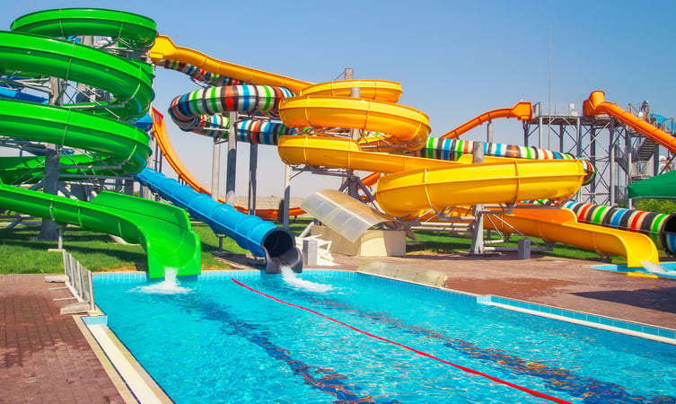

1. St. Angelo Fort

2. Muzhappilangad Beach

3. Palakkayam Thattu

4. Kannur Lighthouse

5. Vismaya Water Park

6. Payyambalam Beach
7. Madayipara

8. Peralassery

Kannur is most renowned for the Theyyam performances in its temples. This magnificent art form plays an integral part in the culture of this Northern Kerala district. Formerly known as Cannanore, Marco Polo christened it a ‘Great Emporium Of Spice Trade’. Kannur has, since time immemorial, been hailed as an influential sea port. Legend has it that it had interactions and trade relations with the rest of the world since the time of King Solomon to the Greeks, Arabs and Romans. It has a plethora of forts, temples, beaches and wildlife sanctuaries that regularly attract visitors. Major festivals and events are held throughout the year and this is among the best places in Kerala to spend your vacation in.
Tourist Information Offices:
District Tourism Promotion Council, Taluk Office Compound, Kannur Ph: 2706336, 2702466
DTPC, Tourist Information Centre, Railway Station Ph: 2703121, Email: info@dtpckannur.com, Department of Tourism Ph: 2702515, Website: www.dtpckannur.com
Getting there
By road: An excellent road transport system connects Kannur to all the major towns of South India. Kannur KSRTC Bus station, Enquiry Ph: 2707777; Private Bus Stand, Enquiry Ph: 6534230
By rail: Kannur is an important railhead of the Southern Railways. Kannur Railway Station, Enquiry Ph: 2705555; Thalassery Railway Station, Enquiry Ph: +91 490 2344131
By air: Calicut International Airport, Kozhikode (93 km)